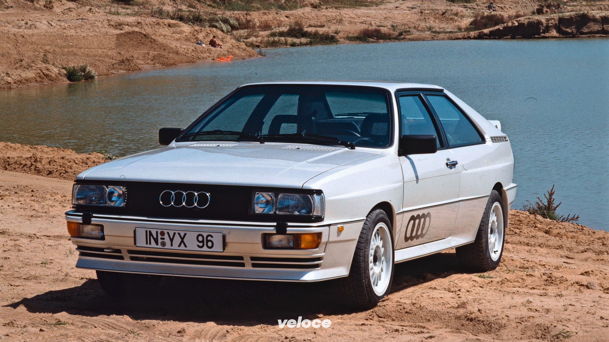
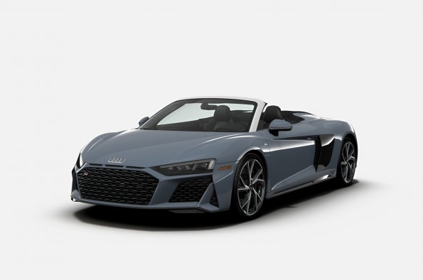

Fondata nel 1909 da August Horch, Audi prende il nome dalla traduzione latina del suo cognome. Fin dall’inizio il marchio ha incarnato innovazione e precisione tedesca.
Nel 1932 nasce l’iconico simbolo dei quattro anelli, rappresentante la fusione di quattro marchi: Audi, DKW, Horch e Wanderer. Insieme formano la leggendaria Auto Union.
Negli anni ’80 Audi rivoluziona il mondo dell’auto con la trazione integrale permanente quattro, diventando protagonista assoluta nei rally e punto di riferimento per stabilità e controllo.
Oggi Audi è sinonimo di design tecnologico e mobilità sostenibile. Con la gamma e-tron e i materiali ultraleggeri in alluminio, continua a rappresentare l’evoluzione dell’eccellenza ingegneristica tedesca.
| AUTO PIÙ VENDUTA | AUTO STORICA | AUTO CON PIÙ PRESTAZIONI |
|---|---|---|
Audi A3Compatta premium apprezzata per la qualità, l’efficienza e la tecnologia. |
 Audi QuattroUn’icona del motorsport anni ’80, celebre per la trazione integrale quattro. |
 Audi R8Supercar con motore V10 e design mozzafiato, simbolo delle prestazioni Audi. |